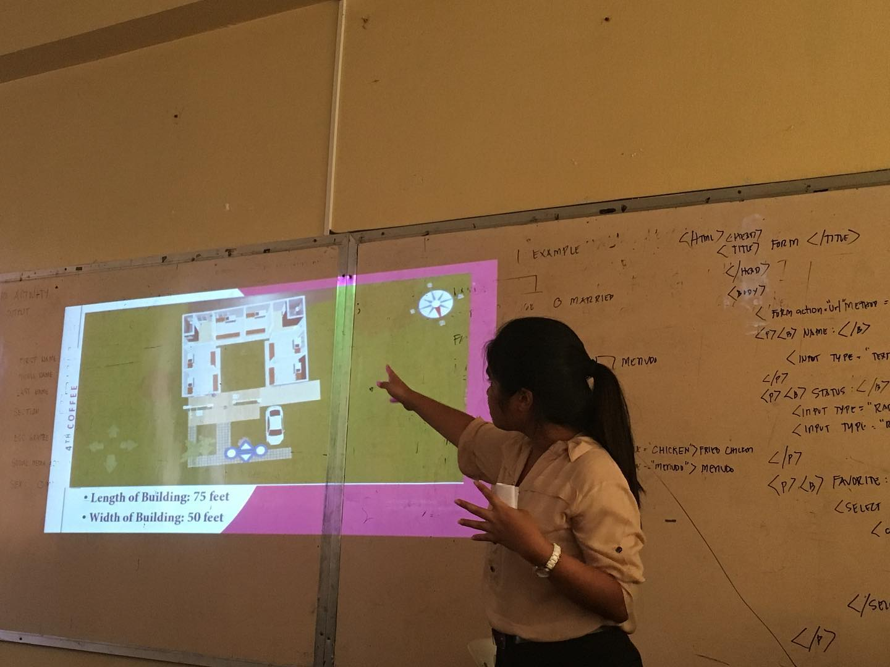
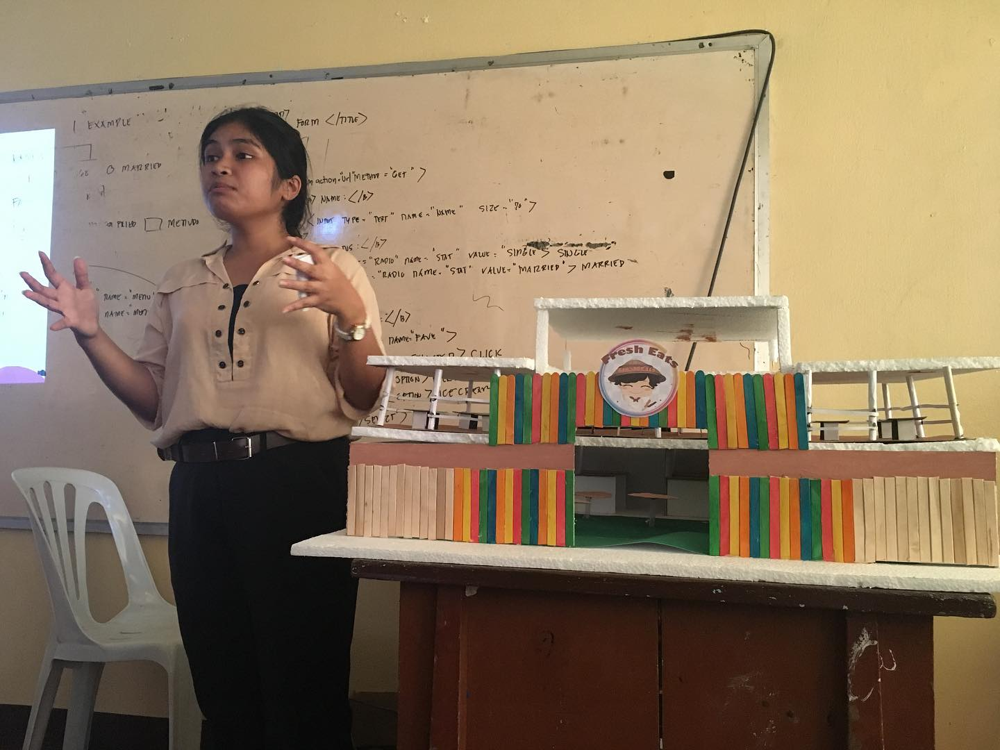
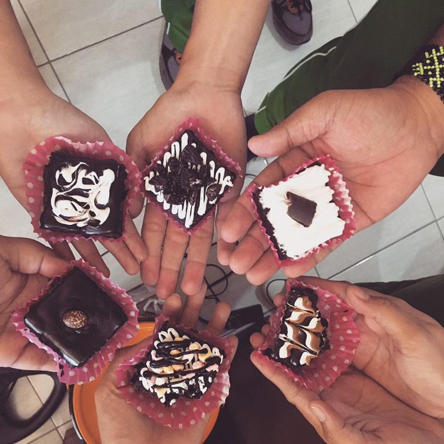
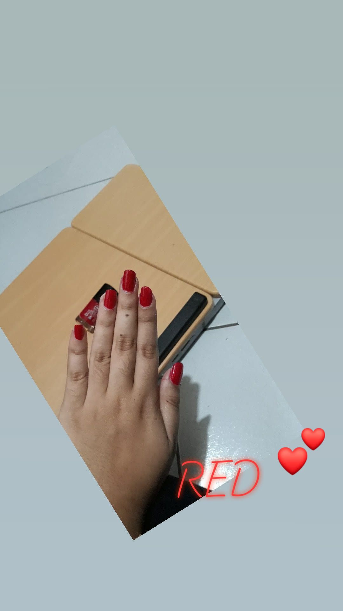

Written By: Tantay, Heidi Nerrie D.
CIP_1101-ITCD Skill is what makes a person stand out from everyone. And ever since I became a student, I noticed that I lack every skill that I could think of. I don't like standing out, and I don't like being called to speak on the front. But as years passed, I developed skills that often forget that I have. Organization skills, as lazy as I am, I like organizing my plans, routines, and tasks in any situation. I am very specific with my time as I don't like being late for any important events. My second skill is budgeting. Being a very thrifty person, I've always been assigned to putting a budget on food, transportation, etc for school projects and outing trips. These skills took a lot of time to grow on me as I was still figuring out all my hobbies and interests. And as soon as I knew them, more skills have erupted in me. A skill that I found very important to my passion is attention to detail. There are a lot of things that can ruin your art, task, and work. Even the smallest things can change a whole piece of work. That is why my attention to detail (only applies to my hobbies and interests.) is very keen. Next is leadership skills. Being a leader means we also have to be good listeners and communicators. That is why taking a step forward and leading a group has become a challenge for me to hone so that I can develop this skill even more. As a part of sharpening our skills, we, later on, discover a new set of them for ourselves. This comes to shows that we should be able to learn new things about ourselves and what we are working with. If we continue on to depriving ourselves of seeking paths that we don't know, we are depriving ourselves of new learnings in life. This basically means that it is important that we are eager to learn from our mistakes. And gaining a skill isn't a race.
 
Go back to top
Usually, with meet and greets in school, the teachers would often ask:
what are your hobbies?. And I always have no answer for that. I don't have creative hobbies that I can share with my other classmates. So I make some up a hobby like drawing and traveling. But then I started cooking for myself, then it became my hobby. I like discovering new ingredients and dishes in my free time. Watching cooking shows such as master chef, hell's kitchen, kitchen nightmares, and cook-off really occupied all of my personal time. Chefs like Gordon Ramsay, Roi Choi, and David Chang have inspired me to discover and explore my pallet to have a broader perspective of flavor combinations and what story a food tells at a table. Going to different places and tasting and discovering new food has become a habit of mine and trying to incorporate them into the dishes that I serve is the best thing that I could see myself doing. And other than cooking, binge-watching TV shows and cartoons are some of my favorite hobbies. Whenever I can't think of something else to do, I rewatch shows like gravity falls, steven universe, Phineas and Ferb, Frozen, Barbie, and many more cartoons. Although they are categorized as cartoons, most of the genres that I watch are mostly thriller, and mysterious. Just so I can keep up with the theories on a specific show, I watch conspiracy theories on youtube to strengthen and discover new information. And these days, aside from watching cartoons and cooking shows, I started painting my nails when I have the time. Simply nailogical is who inspired me to start taking care of my nails and drawing art on them. These hobbies have occupied my free time during the pandemic. It taught me how to cook, lessons about trust, and explored creativity in nail art. These have kept me going whenever I feel bored and alone. I am trying to explore more hobbies that are outside my comfort zone. And maybe someday I'll take an interest in learning how to play an instrument.
 
Go back to top
Trying to learn something new for me is like going into a new universe. I don't have a clue of what it is and how I took interest in it. But one of the things that I will never get tired of having an interest in is food. Food is a broad topic that it's connected to culture, beliefs, traditions, society, and creativity. There is so much to learn from food such as where they came from, what kind of flavors taste alike, and their differences. Food has helped me understand that in other places, there are ethical behaviors that we should respect on eating a dish. Other than the food, one of my other interests is music. I, personally, am not musically inclined. And what triggered me to be interested in music are my friends. Almost every one of my friends from every school that I went to has been or is a part of a choir. Music has an incredible way of bringing people together and expressing how a singer/songwriter feels. It helps us be free of our emotions and tell a story to an audience without actually telling our story. I have always been singing my heart out to my friends even if they say that I am
sintonado. Singing is one of the few things that I want to have a deep understanding of and would give a chance in playing an instrument. Aside from music and food, I have always taken an interest in writing poems. Poems are like puzzling words that you have to think about just to understand the author. Every stanza can have a different meaning to every reader. It can be something that symbolizes new life, love, death, whatever a reader thinks. Poems are such a great way of expressing oneself, and you don't always have to share your thoughts, you can always read them. Each interest of mine is like telling a story of a person, event, and experience. Expressing to me is everything, so anything that expresses oneself interests me.
Go back to top